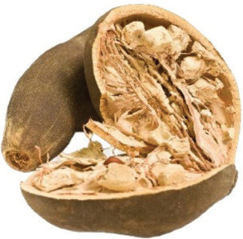
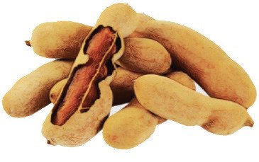
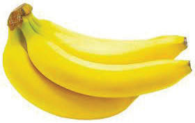
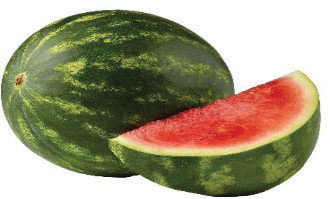
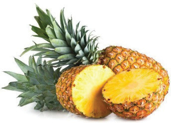

Baobab fruit
TamarindFigure 4.6: Dry fruits
Miscellaneous fruits: These include fruits that are not classified elsewhere, such as watermelons, ripe bananas and pineapples. These fruits are usually difficult to classify. Watermelons and bananas are botanically classified as berries even though they have entirely different shapes. Similarly, a pineapple is neither a pine nor an apple but a fruit consisting of many berries that have grown together. Figure 4.7 illustrates these fruits.

Bananas
Watermelons
PineapplesFigure 4.7: Miscellaneous fruits

Activity 4.1
Observing fruit diversity
Procedure
1. Visit a nearby market where fruits are sold.
2. Assess the available types of fruits.
3. Comment on the fruits’ diversity at the market.
4. Write a report on the performed task.
48